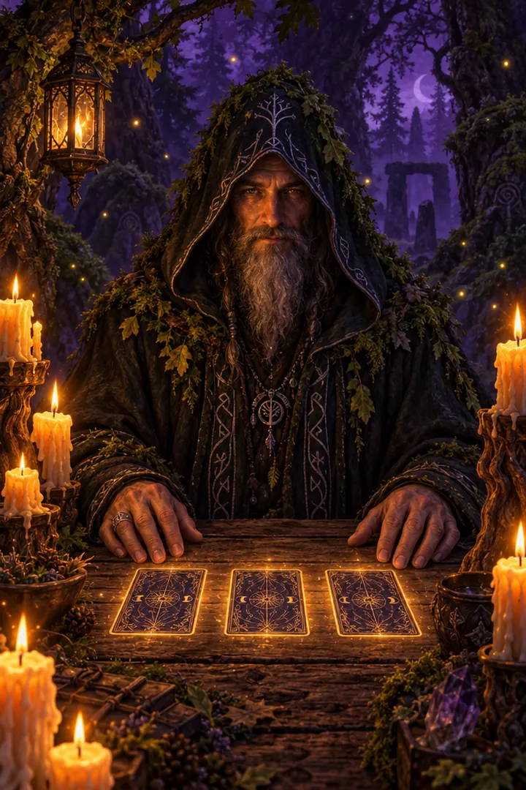
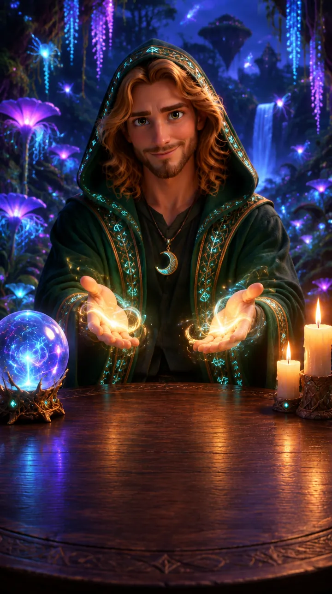
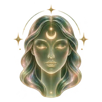

Lo que el universo te dice hoy
Una pregunta, una carta y un momento para escucharte.
0 almas ya entraron a la app
Para hoy
Cuatro cosas para empezar tu díaTu práctica de hoy
Completá las 3 y empezá tu racha
Recomendado para vos
Meditaciones guiadas con mi vozTodo lo que podés descubrir
Tocá cualquier sección. El punto rosa marca lo que todavía no abriste.¿Qué te gustaría descubrir hoy?
El universo tiene respuestas para cada momento de tu vida.
Tarot, astrología y rituales en un solo lugar · 100% privado
100% privado · Tus datos quedan en tu celular
Explorá la app
Tu lectura personalizada con Emma
Una lectura en vivo, con tus cartas y tu historia, para mirar en profundidad lo que estás viviendo.
![]()
¿Qué es Tarot by Emma?
Tarot by Emma es un espacio de autoconocimiento que reúne el tarot, la astrología y tu propia historia en un solo lugar. Lo creó Emmanuel, tarotista de Buenos Aires.
Cuando consultás las cartas, elegís tu pregunta y la tirada, y recibís una lectura clara de cada carta según su posición. Podés recorrer los significados de las 78 cartas para afinar tu intuición y aprender tarot paso a paso, con lecciones y desafíos.
También vas a encontrar herramientas de astrología para explorar por tu cuenta, armadas a partir de mi estudio autodidacta: tu Sol, tu Luna y tu Ascendente según tu fecha, hora y lugar de nacimiento, la energía del día según la luna, tu Revolución Solar y una sinastría para comparar dos cartas. Son una guía para conocerte, no una consulta astrológica profesional.
Para unir todo, tenés un diario donde registrás cómo te sentís y lo vinculás con tus lecturas. Con el tiempo se convierte en un registro de tu propio camino. Y si querés ir más profundo, podés pedirle a Emma una lectura personalizada.
Tarot by Emma está en constante evolución — nuevas funciones y mejoras llegan de forma continua.
Más para explorar
Tu lectura personalizada
Hablá con Emma
WhatsApp¿Cómo te sentís hoy?
Elegí una carita y un nivel de ansiedad — con eso te armamos, al toque, la lectura que mejor te sirve hoy.
Nivel de ansiedad
✨ Gracias por compartirlo, quedó guardado en tu registro.
Tu lectura recomendada para hoy
Quiero mi lectura con EmmaRecordatorio diario
Activá un aviso para no olvidarte de tu lectura de hoy.
Emmanuel
30 años · Buenos Aires, Argentina · Leyendo el tarot desde 2020
Empecé a leer tarot en 2020, en un momento de mucha búsqueda personal, y lo que iba a ser una simple curiosidad terminó convirtiéndose en mi camino. Hoy acompaño a otras personas a mirar sus propias cartas con la misma honestidad y calidez con la que me hubiese gustado que me acompañaran a mí. Creo en un tarot que no juzga ni asusta: sirve para pensar mejor tus propias decisiones, nunca para reemplazarlas. Esta app nació de esa misma idea — un espacio simple, honesto y siempre disponible para volver a mirar hacia adentro.
Carta del día
Elegí cuántas cartas querés tocar hoy y después seleccionalas del mazo.
Consulta personalizada
Contame quién sos y qué querés saber. Con tu nombre completo y tu fecha de nacimiento, la lectura queda mejor aspectada.
Oráculo de regalo
Un mensaje corto para acompañarte hoy. Es un regalo de Tarot by Emma.
Un mensaje corto del universo para acompañarte hoy.
Elegí una carta del mazo
Tiradas
Elegí una tirada según lo que necesites mirar hoy. Cuantas más cartas, más profunda y detallada es la lectura.
Cartas
Descubrí el significado de las 78 cartas del tarot.
Arcanos Mayores
Explorá los 22 Arcanos Mayores. Deslizá y tocá una carta.
Arcanos Menores
Los 56 Arcanos Menores, divididos en cuatro palos.
📚 Fichas de estudio en PDF
Las 78 cartas explicadas una por una: significado al derecho y al revés, simbología y preguntas para tus tiradas. Tocá cualquier carta para abrir su ficha, o descargalas todas juntas.
Arcanos Mayores
Deslizá y tocá una carta para estudiarla.
📚 Fichas de estudio
Las 78 cartas explicadas una por una: simbología, cómo se aplica, la frase lista según dónde cae y preguntas para la tirada. Tocá una carta para abrir su ficha y descargarla o imprimirla.
Lecciones
Tienda
Elegí el tipo de lectura que necesitás. Al tocar "Consultar", te lleva directo a WhatsApp con el mensaje ya armado.
Astrología
La energía del día y la luna se actualizan solas según el momento en que las mires.
Los planetas en 3D
Mapas de superficie: Solar System Scope (CC BY 4.0), basados en imágenes de la NASA.
Tu carta natal
Completá tus datos de nacimiento y calculamos tu carta en el momento.
Zodíaco tropical, casas Placidus y efemérides de alta precisión (diferencia menor a 1 minuto de arco frente a Swiss Ephemeris, la base de astro.com). El huso horario se toma de la historia oficial de tu provincia o estado, con los horarios de verano de cada año.
Revolución Solar
La carta de tu próximo cumpleaños: las energías del año que empieza.
Tu fecha y hora de nacimiento (si ya calculaste tu carta natal con esta fecha, uso esos datos exactos).
Sinastría de pareja
Comparamos dos cartas natales y vemos cómo se conectan sus energías.
Persona A
Persona B
El huso horario de cada persona se calcula solo según su lugar y fecha de nacimiento, incluyendo los horarios de verano históricos.
Los 12 signos
Tocá un signo para ver su energía, elemento y regente.
Los planetas
Tocá un planeta para conocer qué área de tu vida gobierna.
Las 8 fases de la Luna
Tocá una fase para entender qué energía trae dentro del ciclo lunar.

El Brujo
del Bosque
Sentate a su mesa, contale qué te inquieta y dejá que el bosque elija tus cartas. Él te va a contar qué significa cada una y cómo hablan entre sí.
¿Qué querés consultar?
Dá vuelta tus cartas
Lo que te cuentan tus cartas
El bosque guarda otra historia
Cada día las cartas se barajan de nuevo. Volvé cuando sientas que hay algo para preguntar.
El Brujo del Bosque
Elegí qué querés consultar, después un mazo, cargalo con tu energía y el brujo te lee tres cartas: pasado, presente y futuro, con una lectura completa y la conjunción de las tres.
1 · ¿Qué querés consultar?

Manifestación
Más de 300 intenciones para leer, sentir y llevar a tu día. Cada una con su ilustración, lista para compartir.
Planes
Elegí cómo querés vivir la app. Tres niveles: Luna Nueva, Premium Cósmico y Premium Arcano.
Ruleta de cartas
Las cartas giran para vos. Elegí si querés tu carta del día, una tirada de tres o tu carta del mes, y tocá la ruleta cuando lo sientas.
Mi diario
Tu espacio para escribir, sentir y recordar.
¿Cómo te sentís hoy?
Reflexión del día ✦
Inspirate con tu camino ✦
Tocá una idea y te dejo una frase para empezar a escribir.
Tus entradas
Se guardan solo en este celular.
Perfil
Tu espacio personal para seguir tu experiencia.
Editar perfil
Tu actividad
Guardado
Ajustes
Idioma
Tu plan
Tu cielo
Tu Sol, tu Luna y tu Ascendente.
Danos tu opinión
Tu experiencia me ayuda a que la app crezca y sea cada vez mejor.
¿Cómo fue tu experiencia?
Tu opinión es muy importante para mí.
✦ Contame más
¿Qué fue lo que más te gustó? ¿Qué podría mejorar?
¡Gracias! Se abre WhatsApp con tu mensaje listo: solo tocá enviar.
Legal
Términos de uso
Tarot by Emmaa es un espacio de autoconocimiento y entretenimiento. Las lecturas, mensajes y cálculos astrológicos son una herramienta de reflexión y no reemplazan el consejo de profesionales de la salud, legales o financieros.
Las decisiones que tomes a partir de una lectura son tuyas. Usá la app con respeto: el contenido, las ilustraciones y los textos son de Tarot by Emmaa y no se pueden copiar ni vender sin permiso.
Puedo actualizar la app y estos términos cuando haga falta. Si seguís usándola, aceptás la versión vigente.
Política de privacidad
La app no te pide cuenta ni contraseña. Tu nombre, tu foto, tu carta natal, tu diario y tu registro se guardan solo en este celular, en el almacenamiento del navegador. Yo no los recibo ni los veo.
Para saber cuántas personas usan la app, se cuentan de forma anónima las visitas, las personas nuevas, los perfiles creados y los planes activados, y me llega un aviso sin datos personales: nunca tu nombre, tu fecha de nacimiento ni tus lecturas.
Si me escribís por WhatsApp o me mandás un comprobante de pago, uso esos datos solo para responderte y darte tu código Premium.
Para borrar todo, borrá los datos de este sitio desde la configuración de tu navegador.
Pagos y Premium
Los planes Premium (Cósmico y Arcano) se pagan por Mercado Pago, desde mi link de pago (escribís vos el monto de tu plan) o por transferencia al alias garciaemmaa. Cuando me llega el pago y recibo tu comprobante por WhatsApp, te envío un código personal que activa el Premium por 31 días (plan mensual) o por un año (plan anual).
El código se activa en el celular donde lo pegás. Si cambiás de celular, pegá el mismo código mientras esté vigente. Si tenés algún problema con tu pago o tu código, escribime por WhatsApp y lo resolvemos.
Registro
Un diario automático de todo lo que fuiste haciendo en la app, guardado en este celular.
Soltar
Para cuando algo duele. Elegí lo que estás atravesando y encontrá consejos, ejercicios y una tirada para ese momento.
Ejercicios para soltar
Soltar
Las Cinco Órdenes
Una lección de vida por día, de los monjes del Aire, la Marea, la Montaña, la Llama y el Éter. Para leer, entender y llevar a la acción.
El viaje por el cielo
Constelaciones, cúmulos, nebulosas y galaxias: qué son, cómo encontrarlas desde Argentina, sus mitos y lo que significan para vos.
Mente Arcana
Seis juegos para entrenar tu concentración, tu memoria y tu intuición. Con tu propio rating, tu nivel de foco y un desafío nuevo cada día.
Interpretador de sueños
Contame lo que soñaste y descubrí el mensaje que tu inconsciente te dio mientras dormías: símbolo por símbolo, con la luna de esa noche y tu carta del tarot.
Guías de tarot
12 guías, una por signo, para charlar en tiempo real sobre lo que necesites.
Horóscopo diario y chino
Tu horóscopo de hoy, mañana, la semana, el mes y el año, calculado con el cielo real. Y tu animal del horóscopo chino, con el año del Caballo de Fuego.
Grimorio mágico
Tus herramientas de práctica: tu propio mazo, péndulo, numerología, sigilos, cristales y trabajo de sombra.
Lectura de aura
Usá la cámara frente a una pared clara: tu silueta se ilumina con los colores de tu energía y recibís una lectura completa. También podés leer el aura de tus amistades y ver qué tan compatibles son.
Fondos de pantalla
Wallpapers aesthetic para tu celular. Tocá uno para verlo como pantalla de bloqueo y descargalo.
Historias
Calendario mágico
Una actividad y un ritual para cada día, según la Luna. Tocá un día para abrir su hoja.
Lecturas con foto
Mandá una foto de tu vela, de tu mano o de tu rostro y recibí tu lectura completa en el momento.

Hechizos caseros
Rituales fáciles para intencionar la Luna, el amor, la abundancia y tu casa.
Meditaciones guiadas
Voz, música y respiración para cada momento del día y de la Luna.